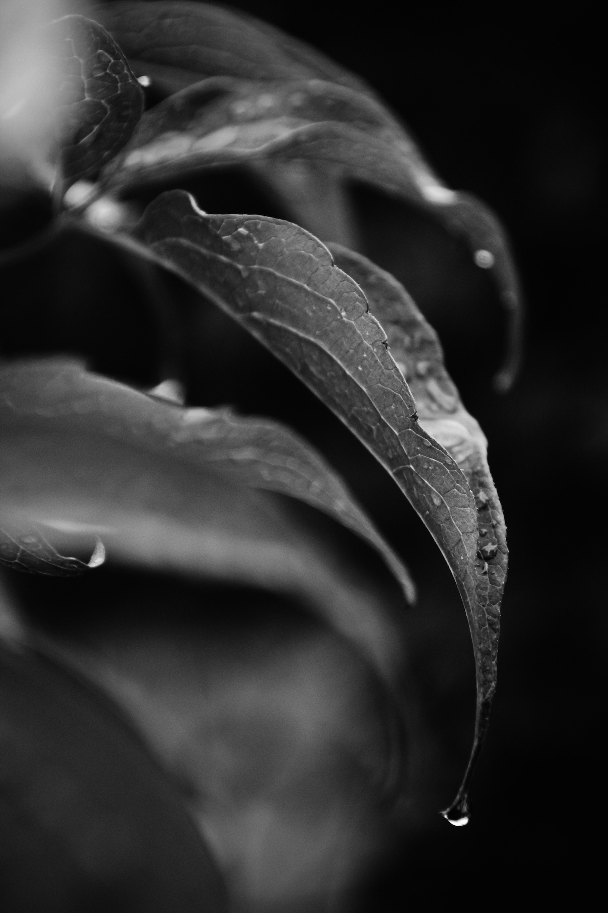
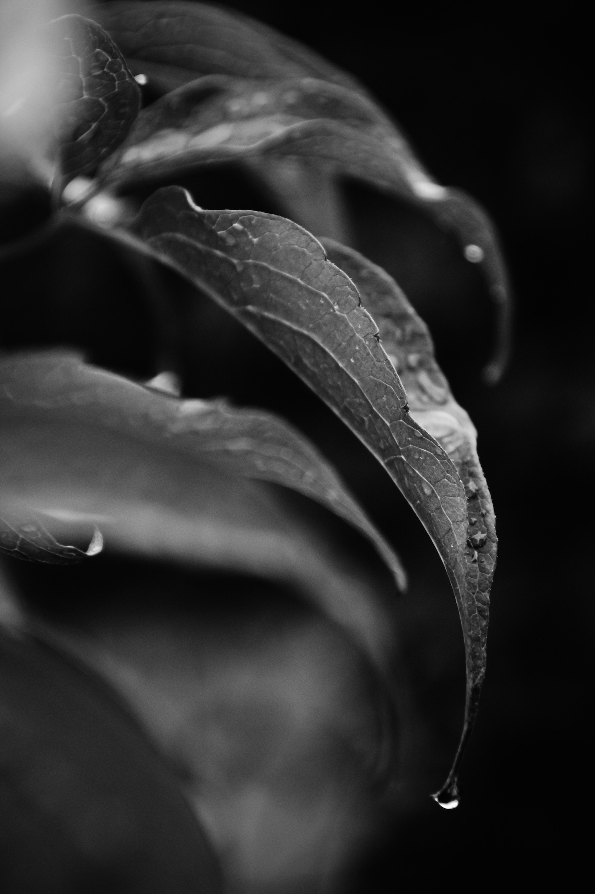

PHOTOS
Passionnée par la photographie, je répertorie tous mes travaux sur un blog. J'ai également participé à des expositions et remporté un concours-photo.

 


J'aime capturer des instants précis, infimes mais pourtant curieusement intéressants, des points de vues originaux, des détails auxquels on ne prête pas forcément attention, des jeux d'ombres, de lumières, de couleurs, des focus et des athmosphères. J'aime la beauté d'un moment gravé.
Vous voulez en voir plus ? Faites un tour sur mon blog : PhotoSansCible.